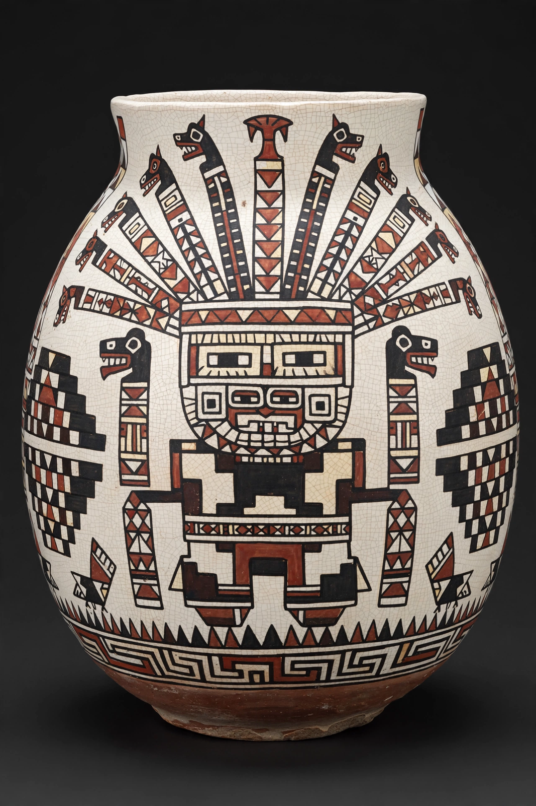

| Wari (Huari) culture | |
|---|---|
| Period | c. 600 – 1100 AD |
| Region | Central Andes, Peru |
| Capital | Huari (near modern Ayacucho) |
| Succeeded by | Regional Late Intermediate Period cultures; later Inca Empire |

The Wari culture (also spelled Huari) was a Middle Horizon civilisation that flourished in the south-central Andes of present-day Peru from about 600 to 1100 AD. From its capital at Huari, near modern Ayacucho, the Wari built what many archaeologists regard as the first empire of the Andes, uniting much of Peru centuries before the Incas and spreading a distinctive art style, administrative architecture and road system across the highlands and coast.
Wari expansion combined military conquest, colonisation and alliance. The state founded planned provincial centres — such as Pikillacta near Cusco, Viracochapampa in the north and Cerro Baúl in the Moquegua valley, the latter a frontier colony facing the rival Tiwanaku state — built to orthogonal plans with high-walled compounds, storage facilities and D-shaped temples. Terraced agriculture, including maize grown for beer used in state feasting, supported the system; Wari roads foreshadowed the Inca road network.
Wari art adapted the religious imagery of Tiwanaku — the Staff God and attendant "angel" figures — into highly abstract, geometric designs on large polychrome ceramics, especially face-neck jars and oversized urns, and on some of the finest textiles ever woven in the Andes, including four-cornered hats and tunics with dizzying stepped patterns.
Beginning around 1000 AD, amid prolonged drought, the Wari state fragmented; many centres were ritually closed or burned, and by 1100 the empire had dissolved into the competing regional cultures of the Late Intermediate Period. Its administrative and artistic legacy strongly influenced the later Inca Empire.
See also: Chan Chan · Inca Empire